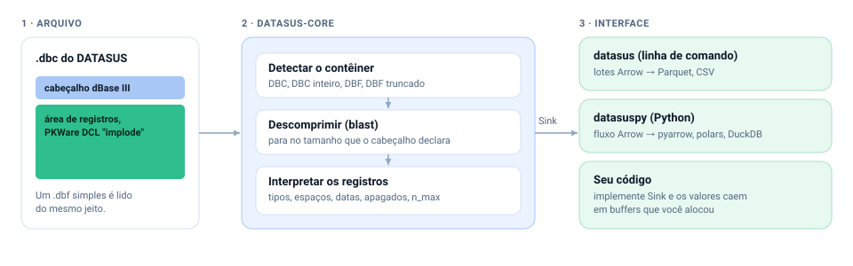

Arquivos .dbc do DATASUS, um leitor para todo lugar.
Um leitor para os arquivos dBase comprimidos que o DATASUS publica e três formas de usar: um crate Rust sem dependências, uma linha de comando que grava Parquet e CSV e um pacote Python que devolve tabelas Arrow.


Um leitor pequeno que faz uma coisa só
O DATASUS distribui internações, produção ambulatorial, nascimentos, óbitos e cadastro de estabelecimentos em .dbc: um arquivo dBase III com os registros comprimidos pela PKWare Data Compression Library. Este projeto lê esses arquivos, e mais nada.
Núcleo sem dependências
O datasus-core usa só a biblioteca padrão: descompressão, detecção do contêiner e leitura do dBase. Compila rápido, tem pouco a auditar e é fácil de embutir.
Um núcleo, três interfaces
A linha de comando, o pacote Python e o seu código Rust chamam o mesmo leitor, então um arquivo é lido do mesmo jeito em todos.
Arrow de fábrica
Lotes tipados vão direto para Parquet, pyarrow, polars ou DuckDB. O Python recebe um fluxo pela interface PyCapsule do Arrow, sem cópias.
Leia só o que precisa
Escolha colunas, limite as linhas, defina tipos, converta datas. Os campos não escolhidos são pulados, e não lidos para depois descartar.
Seguro com arquivo ruim
Cabeçalhos malformados são recusados. A descompressão para no tamanho que o cabeçalho declara e nunca passa de 4 GiB, então um arquivo forjado não se expande sem limite.
Mesmo resultado em qualquer plataforma
Espaço em branco são os seis caracteres ASCII e Latin-1 é ISO-8859-1 estrito, seja qual for o locale ou o sistema operacional.
Instalar e usar
Escolha a interface que serve. Todas aceitam as mesmas opções: colunas a manter, máximo de linhas, remoção de espaços, codificação, inferência de tipos, tipos explícitos e conversão de datas.
Linha de comando
Converter para Parquet ou CSV, inspecionar, descomprimir.
$ brew install strategicprojects/tap/datasus
# ou
$ cargo install datasus-cli# vários arquivos, um Parquet para cada (zstd)
$ datasus convert *.dbc --out-dir parquet/
# duas colunas, 1000 primeiras linhas, em CSV
$ datasus convert RDPE2401.dbc -o rd.csv \
--select uf_zi,val_tot --n-max 1000
# de volta a um .dbf simples
$ datasus decompress RDPE2401.dbcA saída é gravada num arquivo .part e renomeada no sucesso; para sobrescrever uma saída existente, use --force.
Python
datasuspy: wheels para Linux, macOS e Windows, Python 3.10 ou mais novo.
$ pip install datasuspyimport datasuspy
# um pyarrow.Table
table = datasuspy.read_dbc(
"RDPE2401.dbc",
select=["uf_zi", "val_tot"],
)
df = table.to_pandas()
import polars as pl
df = pl.from_arrow(
datasuspy.read_dbc("RDPE2401.dbc"))
# em lotes, para qualquer consumidor de Arrow
reader = datasuspy.open_dbc(
"RDPE2401.dbc", batch_size=100_000)Opções e comportamento no PyPI.
Rust
datasus-core para o leitor, datasus-arrow para lotes Arrow. Rust 1.80 ou mais novo.
$ cargo add datasus-core
$ cargo add datasus-arrowuse datasus_core::{open, ReadOptions};
let opts = ReadOptions {
parse_dates: true,
..ReadOptions::default()
};
let table = open("RDPE2401.dbc", &opts)?;
println!("{} linhas x {} colunas",
table.n_rows(), table.n_cols());
// Vec<ColumnData>, um por coluna
let columns = table.collect();Referência (em inglês): datasus-core · datasus-arrow, também no docs.rs.
Usa R? O pacote datasusr lê os mesmos arquivos em tibbles e tem o que este projeto deixa de fora de propósito: o catálogo das fontes do DATASUS, a listagem da FTP, os downloads e um cache.
Como funciona
O núcleo nunca decide onde os valores ficam. Ele lê um registro e entrega cada valor a um Sink; as colunas pertencem à interface.

Detectar
DBC, DBC de arquivo inteiro, DBF simples ou DBF truncado: o formato é reconhecido pelos bytes.
Descomprimir
Uma tradução para Rust do blast.c de Mark Adler, com limite para a saída.
Tipar as colunas
Campos numéricos sem decimais são inteiros, a não ser que algum valor não caiba em 32 bits.
Encher o sink
Em lotes de qualquer tamanho, para que um arquivo grande nunca fique duas vezes na memória.
Registros marcados como apagados são descartados e n_max conta só os vivos. Colunas de texto nunca são nulas: campo em branco é string vazia. Campos de data são texto, a menos que parse_dates esteja ligado, e data inválida vira nulo. Um cabeçalho que declara mais registros do que o arquivo tem gera um aviso, não um erro.
Velocidade
Tempo para ler um arquivo inteiro para a memória, com todas as colunas, num notebook macOS arm64. Menor é melhor.
Segundos para ler um arquivo
Melhor de três execuções, exceto pyreaddbc + dbfread (uma execução, só no segundo arquivo).
A comparação com o R não é de igual para igual: o R paga para criar as próprias strings, o Arrow não. Com o mesmo destino, uma versão experimental do datasusr sobre este núcleo leu 14 arquivos reais de 1,5 a 1,9 vez mais rápido que o leitor C. A linha de comando, que além de ler comprime e grava o Parquet, levou 1,68 s e 0,52 s nos dois arquivos acima (uma execução cada).
Conferido com o leitor C
O núcleo é um port do leitor C do pacote R datasusr (versão 0.1.1, no CRAN). Um script do repositório lê o mesmo arquivo com os dois e compara todos os valores: 140 de 140 comparações são idênticas, em arquivos sintéticos e em 11 reais (hospitalar, ambulatorial, estabelecimentos, tabelas territoriais), variando seleção de colunas, limite de linhas, tipos, datas, remoção de espaços e codificação.
| Onde os dois diferem, de propósito | Leitor C no R | datasus-rs |
|---|---|---|
| Espaços removidos de um campo | isspace(): depende do locale; no macOS em UTF-8 também remove 0xA0 | Os seis espaços ASCII, em qualquer lugar |
| Texto Latin-1 | O R no macOS e no Windows converte como Windows-1252 | ISO-8859-1 estrito |
Sequências inválidas com encoding = "utf-8" | Mantidas como estão | Trocadas por U+FFFD |
Campo numérico contendo 0x1A ou nan(...) (não ocorre nos arquivos do DATASUS) | Lido como número, porque o strtod() aceita | Nulo: só número decimal é número |
CI em três sistemas
clippy com -D warnings e os testes em Linux, macOS e Windows; o pacote Python é compilado e testado a cada push.
Os testes do R, portados
Os testes do leitor do datasusr rodam aqui também, em arquivos dBase sintéticos criados no próprio teste, mais casos de entrada truncada, preenchimento e limite de saída.
MIT
O descompressor é uma tradução do blast.c de Mark Adler, distribuído sob a licença zlib. Cite o projeto pelo DOI.